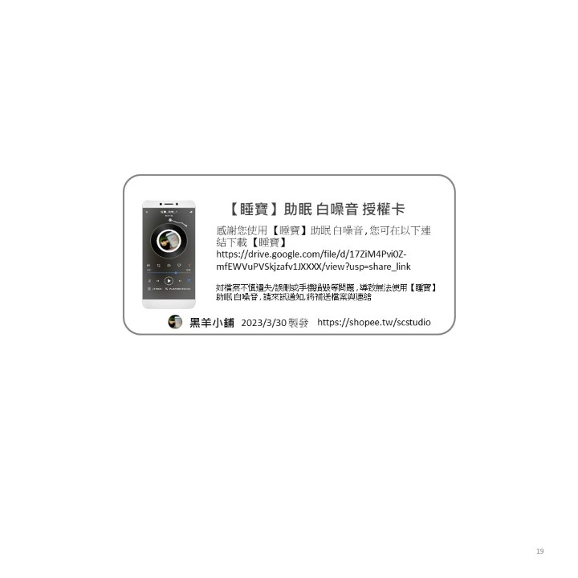

【睡寶】兒童睡眠音樂是現代家長和孩子們長高，失眠，睡不著等問題的好幫手。
【睡寶】產品提供舒適的環境，幫助孩子們更快入睡，以及更長時間地保持睡眠狀態。
對於許多孩子來說，聽到白噪音睡眠音樂是一種舒緩情緒的方式，並且可以幫助他們獲得更好的睡眠品質。此外，助眠音樂也是一種非常有效的入睡方法，這些音樂通常以柔和、安靜和輕柔的方式演奏，可以幫助孩子們放鬆身心，進入一種更加放鬆的狀態。
我們的兒童用白噪音機和助眠音樂產品具有以下優點：
- 安全：我們的產品是專為兒童設計的，可以確保孩子的安全和健康。
- 方便：我們的產品易於操作，並配備各種功能，如定時器、自然聲音選項和音量控制。
- 多樣性：我們的產品包括多種不同的白噪音助眠音樂，可以滿足不同環境的需要和個人喜好。
- 效果：我們的產品是經過專業醫學研究有效助眠音樂，可以提高孩子的睡眠質量和睡眠時間，讓孩子更加健康和充滿活力。

